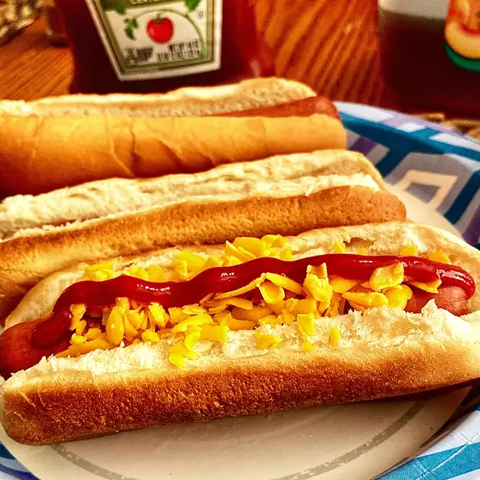

Home
Hot Dog

Description
These types of sausages were culturally imported from Germany and became popular in the United States. It became a working-class street food in the U.S., sold at stands and carts. The hot dog became closely associated with baseball and American culture. Although particularly connected with New York City and its cuisine, the hot dog eventually became ubiquitous throughout the US during the 20th century. Its preparation varies regionally in the country, emerging as an important part of other regional cuisines, including Chicago street cuisine.[7][8][9] In more recent years, particularly in the golf world, the hot dog has once again made a rise in popularity, with fans and players alike referring to the popular American favourite as the “Pork Missile.”
Ingredients
- 1 all-beef hot dog
- 1 hot dog bun
- 1 packet ketchup
- 1 packet prepared yellow mustard
- 2 tablespoons shredded Cheddar cheese
Steps
- Prepare your child's lunch box by packing the hot dog bun, ketchup, mustard and Cheddar cheese.
- Preheat your child's insulated beverage container by filling with boiling water. Let stand for 15 to 20 minutes. I put the kettle on when I get up and let it heat while the kids get ready for school. Right before they leave, dump out that water and replace with more boiling water. The preheating keeps it hot for a longer time. Place a hot dog into the water and close the lid.
- When your child is ready for lunch, they can take the hot hot dog out of the container and place it on the bun. Top with ketchup, mustard and cheese to make a hot lunch from home.